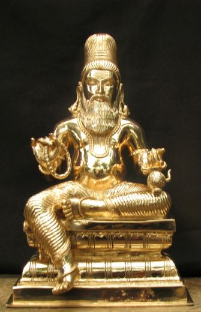

Choose a day and a place.
Rings when the rising timing becomes a financial gain, auspicious financial gain or highly auspicious muhurtham (Muhurtham on rules and GMP 3,11), or a dhana muhurtham inside GMP 3,11. Off = silent. Keep the app open and the phone awake.
Adds every muhurtham still to come on the day shown, each named (for example Highly auspicious muhurtham), to your Calendar with an alert. It rings even when this app is closed. You choose which muhurthams to add first. On iPhone, the Calendar opens: tap Add All. On Android, pick your Calendar app (Google Calendar or Samsung Calendar) and tap Save or Import.அன்றைய நாளின் இனி வரும் முகூர்த்தங்களை பெயருடன் உங்கள் Calendar-இல் சேர்க்கும். ஆப் மூடியிருந்தாலும் அலர்ட் ஒலிக்கும்.
To add just one muhurtham, tap the alarm-clock icon on its row (any tab).ஒரு முகூர்த்தத்தை மட்டும் சேர்க்க, அதன் வரிசையில் உள்ள அலாரம் கடிகார ஐகானைத் தட்டவும்.
Only the 15 lagna / star lord / sub lord combinations of this muhurtham are shown, each with its begin and end time. The first or last window can be cut by the 24-hour range you chose.
Every ascendant timing of the day is checked against the conditions below, using the planets' transit positions at the middle of that timing. A house is the sign counted from the rising sign. As in the Aries example, the house test (condition 2) is applied to the lagna lord as well as the star lord and sub lord. Timings that pass are marked Muhurtham part 1.
All 249 ascendant timings of the day are checked against rules a, b and c below, which apply to the lagna lord, the star lord and the sub lord alike. Planets are taken at the middle of each timing. A timing is also rejected if its lagna lord, star lord or sub lord is retrograde (Rahu and Ketu are not counted). Timings that pass are marked Muhurtham on rules, with Financial gain and Auspicious financial gain marks where they apply.
Dhana muhurtham (Muhurtham part 1, GMP 3,11 and Muhurtham on rules): the 2nd lord or the 11th lord of the transit ascendant is in its own star and in the 1st, 3rd or 11th house; the 2nd and 11th lords are in the same house or both in kendra (so kendra to each other); and the transit Moon is in the star of the 2nd lord or the 11th lord.தன முகூர்த்தம்: லக்னத்தின் 2-ஆம் அல்லது 11-ஆம் அதிபதி தன் சொந்த நட்சத்திரத்தில் 1, 3 அல்லது 11-ஆம் வீட்டில் இருக்க வேண்டும்; 2, 11-ஆம் அதிபதிகள் ஒரே வீட்டில் அல்லது இருவரும் கேந்திரத்தில் இருக்க வேண்டும்; கோசார சந்திரன் 2 அல்லது 11-ஆம் அதிபதியின் நட்சத்திரத்தில் இருக்க வேண்டும்.
Highly auspicious (GMP 3,11 and Muhurtham on rules): the star lord and the sub lord of the ascendant are each the 3rd lord or the 11th lord; they are in the same house or in kendra to each other; neither is in the 8th or 12th house; and neither is in the star of the 8th or 12th lord.மிகச் சிறந்த சுப முகூர்த்தம்: லக்னத்தின் நட்சத்திராதிபதியும் உப அதிபதியும் தலா 3-ஆம் அல்லது 11-ஆம் அதிபதியாக இருக்க வேண்டும்; இருவரும் ஒரே வீட்டில் அல்லது ஒருவருக்கொருவர் கேந்திரத்தில் இருக்க வேண்டும்; இருவரும் 8, 12-ஆம் வீட்டிலோ 8, 12-ஆம் அதிபதிகளின் நட்சத்திரத்திலோ இருக்கக்கூடாது.
Financial gain: the star lord and sub lord of a passing ascendant are both the 2nd lord or 11th lord.தேர்வான லக்னத்தின் நட்சத்திராதிபதியும் உப அதிபதியும் 2-ஆம் அல்லது 11-ஆம் அதிபதிகளாக இருந்தால் "பண லாபம்".
Auspicious financial gain: the lagna lord, star lord and sub lord are each in the star of the 2nd lord or 11th lord (a planet that is also the 8th or 12th lord is not counted).லக்னாதிபதி, நட்சத்திராதிபதி, உப அதிபதி மூவரும் 2-ஆம் அல்லது 11-ஆம் அதிபதியின் நட்சத்திரத்தில் இருந்தால் (8-ஆம், 12-ஆம் அதிபதியாகவும் உள்ள கிரகம் தவிர) "சுப பண லாபம்".
Times are local to the UTC offset you enter (use the offset in force on that date, e.g. 5.5 for India). Positions are sidereal. Calculated on your device from the date, time and place alone; no data is sent anywhere. Accuracy is within a few seconds of time for latitudes between about 60°S and 60°N.
Live lagna follows the clock every second at the chosen place and ayanamsa. Or drag the slider to move through the day. Orange outline: rising sign. Tinted signs: already crossed by the lagna since the start time.
Choose a date and a place, then select Show Timings.
Keep the lost article in mind and tap the time button. The moment you tap is taken as the question time, and the rising sign at that moment for the place selected above is read. Choose your place first.
தொலைந்த பொருளை நினைத்துக்கொண்டு நேரப் பொத்தானை அழுத்துங்கள். அழுத்தும் நேரமே கேள்வி நேரமாக எடுத்துக்கொள்ளப்பட்டு, மேலே தேர்ந்த இடத்திற்கான அந்த நேர லக்னம் ஆராயப்படும். முதலில் உங்கள் இடத்தைத் தேர்ந்தெடுங்கள்.
Pick a from date and a to date (up to 31 days). The place, UTC offset and ayanamsa from the form above are used. Every ascendant timing is checked, and those where the star lord and sub lord of the ascendant carry the 2nd, 3rd and 11th lord connection, with the 3rd lord and the 11th lord planets in kendra to each other (so never 6th or 8th from each other) and not in the star of the 8th or 12th lord, are listed as auspicious lagna muhurtham.
தொடக்க தேதி, முடிவு தேதியைத் தேர்ந்தெடுங்கள் (அதிகபட்சம் 31 நாட்கள்). மேலே உள்ள இடம், UTC நேர வேறுபாடு, அயனாம்சம் பயன்படுத்தப்படும். லக்னத்தின் நட்சத்திராதிபதி, உப அதிபதி 2, 3, 11-ஆம் அதிபதி தொடர்பு கொண்டு, 3-ஆம் அதிபதியும் 11-ஆம் அதிபதியும் ஒருவருக்கொருவர் கேந்திரத்தில் (6, 8-ஆக அல்லாமல்) இருந்து, 8, 12-ஆம் அதிபதிகளின் நட்சத்திரத்தில் இல்லாத லக்ன நேரங்கள் சுப லக்ன முகூர்த்தமாகப் பட்டியலிடப்படும்.
Enter the race start time, choose the race location (racecourses or any of about 7,000 world cities) and the number of horses. The transit chart of that moment and place is analysed to find the horse numbers with winning chances and name hints.
பந்தயம் தொடங்கும் நேரம், இடம் (ரேஸ் கோர்ஸ் அல்லது உலக நகரம்), குதிரைகளின் எண்ணிக்கையை உள்ளிடுங்கள். அந்த நேரம், இடத்தின் கோசார ஜாதகம் ஆராயப்பட்டு வெற்றி வாய்ப்புள்ள குதிரை எண்கள், பெயர் குறிப்புகள் காட்டப்படும்.
Keep your question in mind, choose the place, and tap Note the question time. The moment you tap is the question time. The rising sign of that moment is read: the 3rd lord and 11th lord (and the star lord and sub lord of the rising degree) are checked for kendra, their distance to each other, the timing number, the Moon's transit of their stars and any Saturn delay.
கேள்வியை மனதில் நினைத்து, இடத்தைத் தேர்ந்தெடுத்து கேள்வி நேரத்தைப் பதிவு செய் பொத்தானை அழுத்துங்கள். அழுத்தும் நேரமே கேள்வி நேரம். அந்த நேர லக்னத்தின் 3-ஆம், 11-ஆம் அதிபதிகள் (மற்றும் லக்ன நட்சத்திர, உப அதிபதிகள்) கேந்திரம், ஒன்றுக்கொன்று உள்ள தூரம், கால எண், சந்திரன் அவர்களின் நட்சத்திரத்தில் செல்லும் நாட்கள், சனி தாமதம் ஆகியவை ஆராயப்படும்.
Fortuna is the point Ascendant + Moon − Sun. In the transit chart it shows the luck of the moment; in the birth chart it shows the native’s own luck. Quality: look at the sub lord of the Fortuna point and then at its star lord. If that star lord signifies 2, 6, 11 the Fortuna is good; if it signifies 5, 8, 12 it is bad; if both, medium. Powerful sign: the sign where the Fortuna sub lord stands (not the sign where Fortuna falls). From it come ten fortunate elements: day, number, god, colour, stars, month (Sun in that sign), year (Jupiter in that sign), time (the ascendant in that sign), gem and tree.
Timing. For the purposes you tick, every ascendant lord / star lord / sub lord window of the day is checked: the ascendant sub lord and star lord should signify the houses of the purpose (money 2-6-11, exam 4-9-11, job 2-6-10-11, visa 3-9-12, medicine 1-5-11, travel 3-9-11, house 4-11-12, purchase 2-4-11) and not the houses to avoid, and the Fortuna of that moment should not be bad. If you enter your birth details, windows in your own Fortuna sign and on your fortunate day score higher. Touch a window to set its alarm; the Clock tool can plan these alarms too.
போர்ச்சுனா = லக்னம் + சந்திரன் − சூரியன். போர்ச்சுனா உப அதிபதியின் நட்சத்திர அதிபதி 2, 6, 11-ஐ குறித்தால் நல்லது; 5, 8, 12-ஐ குறித்தால் கெடுதல்; இரண்டும் இருந்தால் நடுத்தரம். உப அதிபதி நிற்கும் ராசியே பலமான ராசி. இந்த விதிகள் வழங்கப்பட்ட குறிப்புகளிலிருந்து (ஆசிரியரின் அனுபவம்) எடுக்கப்பட்டவை.
Pick your question from the list (it is grouped by house, as in S. P. Khullar’s Horary Astrology and Cuspal Interlinks and K. B. Bosmia’s Easy Way to Learn KP Horary Astrology), choose the place, and give a horary number from 1 to 249 (or use the time of judgment). No birth chart is needed. The app casts the horary chart, finds the sub lord of the cusp that rules your question, checks the houses it signifies against the houses of that event, checks the 11th cusp for fulfilment, the sub-sub lords, and the seven ruling planets. It then gives YES / NO with reasons. If the event is promised, it finds the joint period (dasa–bhukti–antara) run from the Moon of the question and confirms the time with the transit of the Sun, Moon, Lagna and Jupiter (Rahul Kaushik’s rules for timing).
பட்டியலில் இருந்து கேள்வியைத் தேர்ந்தெடுத்து, இடத்தையும் 1 முதல் 249 வரையிலான பிரசன்ன எண்ணையும் கொடுங்கள் (அல்லது கேள்வி கேட்கும் நேரத்தை எடுத்துக்கொள்ளலாம்). ஜாதகம் தேவையில்லை. கேள்விக்குரிய பாவ உப அதிபதி எந்த பாவங்களைக் குறிக்கிறது, 11-ஆம் பாவம், ஆளும் கிரகங்கள் ஆகியவற்றை ஆராய்ந்து ஆம் / இல்லை என்ற பதிலைக் காரணங்களுடன் தரும். நிகழ்வு உறுதியானால், தசா–புக்தி–அந்தரம், சூரியன், சந்திரன், லக்னம், குரு கோசாரம் மூலம் நிகழும் காலத்தைக் காட்டும்.
Choose what you want to begin (trade, vehicle, land, game, agriculture and more). The panel lists the planetary positions recommended by Vivian E. Robson (Electional Astrology, 1937) and Joann Hampar (Electional Astrology, 2005) for that event. Then choose the place, the dates and the daily time window. The app moves the transit minute by minute: the rising degree, Placidus houses, the Moon (void-of-course, Via Combusta, phase, her aspects), retrograde and combust planets, dignities, the Part of Fortune, planetary hours and eclipses. Each moment is scored against that event’s rules, and the best windows are listed with their start, end and duration, and the rules that were met or missed.
The books use the tropical zodiac and Western house rulers, so this is the default; you can switch to the sidereal zodiac. Outer planets (Uranus, Neptune, Pluto) and the birth chart check are not included. These are traditional guidelines, not a guarantee.
நிகழ்வைத் தேர்ந்தெடுத்தால், ராப்சன் (Robson), ஹாம்பர் (Hampar) ஆகிய நூலாசிரியர்கள் பரிந்துரைத்த கிரக நிலைகள் காட்டப்படும். இடம், தேதி, நேர வரம்பைக் கொடுத்தால், அந்த நூல்களின் விதிகளின்படி கிரகப் பெயர்ச்சியை நிமிடம் நிமிடமாக ஆராய்ந்து, சிறந்த முகூர்த்த நேரங்களை கால அளவுடன் பட்டியலிடும். நூல்கள் வெஸ்டர்ன் (திரோபிகல்) முறையைப் பயன்படுத்துவதால் அதுவே முன்னிருப்பு; நிரயன முறைக்கும் மாற்றலாம்.
Rules are traditional and probability-based. This is not a guarantee, not betting, gambling or investment advice, and the author and app creator accept no liability.
Choose the day, month and year of birth, the time of birth, and the place (country, state and city). Latitude, longitude and the world time zone are filled in automatically, and the UTC offset is worked out for the birth date, so past daylight or war-time changes are applied. You get the Rasi, Navamsa and KP bhava charts, planet details, cuspal details, the houses each planet links to and signifies, the significators of every house, the dasha balance and the running dasha, and every dasha, bhukti and antara period. Use KP or Lahiri ayanamsa. All of it can be copied or printed.
பிறந்த நாள், மாதம், வருடம், நேரம், இடம் (நாடு, மாநிலம், நகரம்) ஆகியவற்றைத் தேர்ந்தெடுங்கள். அட்சரேகை, தீர்க்கரேகை, உலக நேர மண்டலம் தானாக நிரம்பும்; பிறந்த தேதிக்கான UTC வேறுபாடும் தானாகக் கணக்கிடப்படும். ராசி, நவாம்ச, கே.பி பாவ சக்கரங்கள், கிரக விவரம், கஸ்ப் விவரம், கிரகங்களின் பாவத் தொடர்பும் குறிப்பும், ஒவ்வொரு பாவத்தின் காரகர்கள், தசா இருப்பு, நடப்பு தசை, அனைத்து தசா புக்தி அந்தர காலங்கள் ஆகியவை கிடைக்கும். கே.பி அல்லது லாஹிரி அயனாம்சம் தேர்வு செய்யலாம். அனைத்தையும் நகலெடுக்கவோ அச்சிடவோ முடியும்.
Draws the Ascendant, Descendant, MC and IC lines (“waves”) of all nine planets on a world map for the birth details in the Birth chart form, and marks the places where the waves of the ascendant lord, Moon and the 4th, 5th, 6th, 8th and 12th lords meet, with the nearest city or town. The 2nd lord’s lines show money places. Everything works offline.
பிறப்பு ஜாதகப் படிவத்தில் உள்ள விவரங்களுக்கு ஒன்பது கிரகங்களின் லக்ன, அஸ்தம, MC, IC கோடுகளை (அலைகள்) உலக வரைபடத்தில் வரைந்து, லக்னாதிபதி, சந்திரன், 4, 5, 6, 8, 12ஆம் அதிபதிகளின் அலைகள் சந்திக்கும் இடங்களையும் அருகிலுள்ள நகரங்களையும் குறிக்கும்.
Lines: solid = ASC and MC, dashed = DSC, dotted = IC. Thick lines belong to the lords used below. ★ birth place. ● children / intelligence · ● and ● land and happiness · ● and ● not suitable · ◆ money (2nd lord). Drag to move, pinch or scroll to zoom.
Please read: a lottery draw is random and no timing can change its odds. These ten rules come from KP astrological belief about gain by chance (houses 2, 5, 6, 8 and 11). They were not derived from, or tested on, a set of winners, because the purchase time of winning tickets is not published anywhere. Treat the result as an astrological preference for choosing a time, not a prediction, and never spend more than you can afford to lose. No money amount can be forecast.
லாட்டரி குலுக்கல் தற்செயலானது; எந்த நேரமும் வாய்ப்பை மாற்றாது. இந்த பத்து விதிகளும் கேபி ஜோதிட நம்பிக்கையின் அடிப்படையிலானவை, புள்ளிவிவரத்தால் நிரூபிக்கப்பட்டவை அல்ல. இது முடிவு அல்ல, நேரத் தேர்வுக்கான வழிகாட்டி மட்டுமே; இழக்கக்கூடிய தொகையை மட்டுமே செலவிடுங்கள்.
Studies 75 real winning tickets against the sky over Dubai at the draw, then reads the sky for the dates and places you choose to suggest buying times and numbers (6-digit and 5-digit tickets, sets of numbers with a play ball). A draw is random: the table shows honestly whether the 75 results support any connection.
Choose a place and a from and to date. The app reads the transit ascendant at every sub-lord change, the transit planets, the house cusps and their significations, and lists the timings that meet every rule you tick in the rules menu below. The house lords are those of the cusp signs. These rules express KP astrological belief about money coming to you; they are a guide for choosing a time, not a guarantee.
இடம், தொடக்க, முடிவு தேதியைத் தேர்ந்தெடுங்கள். ஒவ்வொரு உப அதிபதி மாற்றத்திலும் கோசார லக்னம், கிரகங்கள், பாவ கஸ்ப்கள், அவற்றின் காரகத்துவம் ஆராயப்பட்டு, இந்த ஐந்து விதிகளுக்குப் பொருந்தும் நேரங்கள் தரப்படும். இது வழிகாட்டி மட்டுமே.
Choose the ground, the match date(s) and the playing hours. At every ascendant sub-lord change the transit chart is read. A timing is listed when the star lord or sub lord of the ascendant is the 3rd lord or the 11th lord. The list shows only the time, marked WICKET POSSIBILITY when the sub lord is the 11th lord or stands in the 11th lord’s star, and ADVERT BREAK for the other timings. Tap a time to see its transit chart. It is astrology for study and entertainment, not a prediction or betting advice.
மைதானம், போட்டி தேதி, ஆட்ட நேரத்தைத் தேர்ந்தெடுங்கள். லக்ன நட்சத்திர அல்லது உப அதிபதி 3 அல்லது 11-ஆம் அதிபதியாக இருந்தால் நேரம் பட்டியலிடப்படும். உப அதிபதி 11-ஆம் அதிபதியாகவோ அவரது நட்சத்திரத்திலோ இருந்தால் “விக்கெட் வாய்ப்பு”; மற்ற நேரங்கள் “விளம்பர இடைவேளை”. நேரத்தைத் தொட்டால் கோசார சக்கரம் தெரியும்.
3 11 All Timings. Every time the transit ascendant, its star lord and its sub lord make one of the 3,11 combinations below, the start and end time is listed for your place. Aries Mars/Venus/Saturn · Taurus Venus/Moon/Jupiter · Gemini Mercury/Mars/Mercury, Mercury/Mars/Moon, Mercury/Mars/Sun · Cancer Moon/Mercury/Venus · Leo Sun/Venus/Mercury · Virgo Mercury/Moon/Moon · Libra Venus/Jupiter/Sun · Scorpio Mars/Saturn/Mercury, Mars/Mercury/Saturn · Sagittarius Jupiter/Venus/Saturn · Capricorn Saturn/Mars/Mars · Aquarius Saturn/Jupiter/Jupiter · Pisces Jupiter/Jupiter/Mars.
3 11 எல்லா நேரங்களும்: லக்ன அதிபதி / நட்சத்திர அதிபதி / உப அதிபதி மேலே கூறிய சேர்க்கைகளில் வரும் தொடக்க, முடிவு நேரம் பட்டியலிடப்படும்.
Author’s Muhurtham. At every change of the rising ascendant lord, star lord or sub lord, each of the planets you choose is checked in the transit chart. Houses are counted from the rising sign. Should: be placed in the 1st, 2nd, 3rd or 11th house, or be in the star of the 1st, 2nd, 3rd or 11th lord, or be in the star of a planet placed in the 1st, 2nd, 3rd or 11th house (choose whether any one or all three must hold). Should not: itself be the lord of the 5th, 8th, 9th or 12th house (except that the 8th-lord rule is waived for a planet that is also the 1st lord, as Mars for Aries and Venus for Libra), be placed in the 5th, 8th, 9th or 12th house, be in the star of the 5th, 8th, 9th or 12th lord, be in the star of a planet placed in the 5th, 8th, 9th or 12th house, or be retrograde (Rahu and Ketu are always retrograde by nature, so they are not counted for this). In the list, H3 means placed in the 3rd house, ★2L Ve means in the star of the 2nd lord Venus, and ★Ma in H11 means in the star of Mars who stands in the 11th house.
ஆசிரியர் முகூர்த்தம்: லக்ன அதிபதி, நட்சத்திர அதிபதி, உப அதிபதி ஆகியோர் 1, 2, 3, 11-ஆம் வீட்டில் இருக்க வேண்டும், அல்லது 1, 2, 3, 11-ஆம் அதிபதியின் நட்சத்திரத்தில் இருக்க வேண்டும், அல்லது 1, 2, 3, 11-ஆம் வீட்டில் உள்ள கிரகத்தின் நட்சத்திரத்தில் இருக்க வேண்டும். கிரகமே 5, 8, 9, 12-ஆம் வீட்டு அதிபதியாக இருக்கக் கூடாது (லக்னாதிபதியே 8-ஆம் அதிபதியாகவும் வரும் மேஷம், துலாம் லக்னத்தில் 8-ஆம் அதிபதி விதி விலக்கு); 5, 8, 9, 12-ஆம் வீடு, அந்த வீட்டு அதிபதிகளின் நட்சத்திரம், அந்த வீட்டில் உள்ள கிரகத்தின் நட்சத்திரம், வக்ரம் ஆகியவை இருக்கக் கூடாது.
These rules were distilled from two profitable trades (Pallavaram, 1 Feb 2026 11:40:59 and 2 Feb 2026 15:01). The KP chart of each moment was studied, and the conditions that both moments share were kept. A time is listed when all four hold: (1) the Moon’s star lord signifies the 11th house; (2) the 5th cusp sub lord signifies the 11th; (3) the 6th cusp sub lord signifies the 11th; (4) there is no loss, meaning the ascendant star lord and sub lord do not signify the 12th without the 11th. A time is marked Strong when, in addition, the Moon’s sub lord signifies the 8th house (sudden gain). Houses signified are the usual KP significators on the Placidus cusps.
About 9% of random market-hour times meet the four rules and about 4% are Strong, so the list is selective. Be careful: two trades cannot prove a rule. Both trades also meet these rules by chance more often than you might expect, and the existing Money Profit and Author’s rules were not met by them. Treat the list as a research aid to test against more of your trades, not as a promise of profit or financial advice. Market hours are 09:15 to 15:30 on trading days; change the time window if you need.
இரண்டு லாப வர்த்தக நேரங்களின் KP ஜாதகத்தில் இரண்டிலும் பொதுவாக இருந்த விதிகள்: (1) சந்திரனின் நட்சத்திர அதிபதி 11-ஐ குறிக்க வேண்டும், (2) 5-ஆம் கஸ்ப் உப அதிபதி 11-ஐ குறிக்க வேண்டும், (3) 6-ஆம் கஸ்ப் உப அதிபதி 11-ஐ குறிக்க வேண்டும், (4) லக்ன நட்சத்திர, உப அதிபதிகள் 11 இன்றி 12-ஐ குறிக்கக் கூடாது. சந்திர உப அதிபதி 8-ஐ குறித்தால் “வலுவானது”. இது ஆய்வுக்கு மட்டும்; லாப உறுதி அல்ல.
This tool reads the real planetary positions for every candle (all calculated offline) and turns them into a planetary pressure index. It is not a price feed, so the candles are synthetic: they show how bullish or bearish, and how volatile, the sky is, drawn as candles so that candlestick and chart patterns can be read. Type your index level (for example Nifty 25000) in the start level box to see the candles on that scale; the daily move box sets how far a fully bullish or bearish day may travel.
Rules used. They come from two books: Timing Solutions for Swing Traders (Lee and Tryde, 2012, chapter 9) and the Celestial Mechanics of the Marketplace report. Seven rule groups add up to the pressure score, and every candle lists which of them pushed it: (1) Lunar cycle, buy near the New Moon and sell near the Full Moon, with quarter moons and eclipses as change-in-trend windows; (2) Planet strength, Jupiter and Venus bullish, Saturn, Mars, Rahu and Ketu bearish or volatile, adjusted for strong or weak signs and retrograde motion; (3) Classic pairs, such as Venus–Jupiter (bullish), Saturn–Uranus and Saturn–Pluto (bearish), Mars–Saturn (brakes on), Sun–Mercury conjunction (reversal day); (4) Other aspects between planets; (5) Transit to the market’s natal chart (Table 9.1 of the book): Venus or Jupiter in sextile or trine to the market’s natal Sun, Jupiter or Pluto, Jupiter on its Part of Fortune, and hard aspects from Saturn, Mars, Uranus or Pluto to its natal money planets; (6) Transit ascendant and cusps, where stress on the money houses (2, 5, 8, 11) is a warning and the KP 11th-house rules mark gain; (7) Turning-point windows, stationary planets, Full and quarter moons, eclipses. The “rule book” at the bottom of the results lists them with their sources. The market’s natal chart can be switched off or replaced with your own date, time and place; the NSE default uses 3 Nov 1994, 09:00 IST as an assumption, so replace it with a time you trust. Volatility grows with Mars, Rahu, Ketu, Saturn, hard aspects, retrograde planets and a Moon near the nodes.
Check the rules on real prices. Paste your own daily prices (date, open, high, low, close, one line per day) in the box below. The app then draws your real candles, shows what the planets predicted for each day, and counts how often the rules were right, in total and by rule group. Nothing is sent anywhere.
Patterns found on the candles: doji, hammer, hanging man, shooting star, engulfing, morning and evening star, three soldiers and crows, marubozu, double top and bottom, head and shoulders, support and resistance, breakout, trend and moving-average crosses. Be careful: these are classical associations, not tested price predictors. Use for research and learning, not as financial advice.
ஒவ்வொரு மெழுகுவர்த்திக்கும் உண்மையான கிரக நிலைகள் (இணையம் இல்லாமல்) கணக்கிடப்பட்டு “கிரக அழுத்த குறியீடு” ஆக மாற்றப்படுகிறது. இது உண்மையான விலை அல்ல; ஏற்றம்/இறக்கம் மற்றும் ஏற்ற இறக்கத்தை மெழுகுவர்த்தியாக காட்டும் ஆய்வுக் கருவி. நிதி ஆலோசனை அல்ல.
The ring shows the 12 rasis with Aries at the top, running clockwise like the hours. The gold Asc marker is the live transit ascendant: it travels once round the ring every day. The planets are placed on the same ring (sidereal, KP or Lahiri as chosen in the Transit settings). Everything is calculated on this device, so it works with no internet.
With internet the place is found automatically. Without it, the place chosen here (country, state, city) is used for the ascendant and all the muhurtham times.
Choose the muhurthams you want. At each window's start time one alarm and notification comes, the melody plays twice, and then it fades out by itself so the next muhurtham alarm can come in its own time. Press Success on the alarm to stop it sooner. On the Android and Windows apps the alarms ring even when the app is closed and offline. Open the app once a day to add the next day's alarms (the app also tops them up while it is open).
Android phone: install the GuruAgasthiya APK (everything, including alarms that ring when the app is closed). Or open the web app in Chrome, tap the menu and choose Install app.
iPhone / iPad: open the web app address in Safari, tap Share, then Add to Home Screen. It opens full screen like an app and works offline. Apple does not let a web app ring alarms when it is closed, so keep the clock open on the Lock Screen or use the phone's own alarms for those times.
Windows: run the GuruAgasthiya Setup (or the portable app). Or open the web app in Edge or Chrome and use Install in the address bar. Pin it to the taskbar and press Full screen to use it as a desk clock.
Tip: pick Full screen above for a wall or desk clock. The screen is kept awake while it is open (where the device allows).
How the rules were chosen. They come from the 14 winning-ticket purchases you supplied: for each, the transit ascendant sub lord, cusp sub lords and the Moon’s star lord were compared with random times. The link that repeated most is the 11th house (gain) through the ascendant sub lord or the 11th cusp sub lord (13 of 14 purchases; about 59% of random times). The menu lists each rule with its count so you can see how strong it is. It works completely offline. A muhurtham from these rules is a traditional KP preference for starting money activities (business, investment, signing, lending, buying or selling); it does not guarantee profit.
நீங்கள் தந்த 14 வெற்றி டிக்கெட் நேரங்களில் அடிக்கடி வந்த கிரக தொடர்புகள் இங்கு விதிகளாக உள்ளன. இது இணையம் இல்லாமலும் வேலை செய்யும். இது பாரம்பரிய KP விருப்பமே; லாபத்திற்கு உத்தரவாதம் அல்ல.
This is not a way to make money. In the test on 14 winning-ticket purchases, no planetary condition separated them from random times (global p about 0.88). A lottery or casino result is decided by the draw or the game, not by the time a bet is placed. The finder lists timings that match the KP rules you tick: an astrological preference only. Bet only what you can afford to lose. In the USA, help for gambling harm: 1-800-GAMBLER.
வெற்றி டிக்கெட் நேரங்களில் எந்த கிரக நிலையும் தனித்து தெரியவில்லை. இது பணம் சம்பாதிக்கும் வழி அல்ல; இழக்கக்கூடிய தொகையை மட்டுமே பயன்படுத்துங்கள்.
What this is, honestly. It analyses the 14 winning-ticket purchases you supplied and compares each condition with 4,000 random times in Michigan. The result: none of the planetary conditions separates your 14 purchases from random times. The most frequent one (ascendant sub lord signifying the 11th with another gain house) appears in 9 of 14 purchases, but random times would give about 4.6, and a search of 351 conditions finds a result this strong by chance most of the time (global p about 0.88). A lottery or casino result is decided by the draw or the game, not by the time a bet is placed, and both have a house edge. The finder below lists timings that match the traditional KP rules you choose. Treat it as an astrological preference, never as a way to make money, and bet only what you can afford to lose. If gambling is causing you harm, help is available (in the USA, 1-800-GAMBLER).
நீங்கள் தந்த 14 வெற்றி டிக்கெட் வாங்கிய நேரங்களை ஆராய்ந்து, 4,000 சீரற்ற நேரங்களுடன் ஒப்பிடப்பட்டது. கிரக நிலைகள் எதுவும் இந்த 14 நேரங்களை சீரற்ற நேரங்களிலிருந்து வேறுபடுத்தவில்லை. வெற்றி என்பது குலுக்கலால் தீர்மானிக்கப்படுகிறது, வாங்கும் நேரத்தால் அல்ல. இழக்கக்கூடிய தொகையை மட்டுமே பயன்படுத்துங்கள்.
This finds times whose transit chart resembles the charts of 54 great earthquakes you supplied. It does not forecast earthquakes. Tested against random times at the same places, none of 445 conditions stood out (best one would appear by chance 35% of the time), and conditions picked from the earlier quakes did not hold on the later ones. Do not warn or alarm anyone on the basis of this list; for real hazard information use your national seismological agency and USGS.
இது நில அதிர்வை முன்னறிவிப்பு செய்யாது. இந்த பட்டியலை வைத்து பிறருக்கு எச்சரிக்கை விடுக்க வேண்டாம்.
Please read first. This option finds times whose transit chart resembles the charts of 54 great earthquakes (magnitude 7 or more, 1,000 or more deaths, 1900–2023) that you supplied. It does not forecast earthquakes. When 445 planetary and cusp conditions were tested on those 54 earthquakes against random times at the same places, none stood out: the best of them would appear by chance 35% of the time, and conditions chosen from the earlier 27 earthquakes did not hold on the later 27 (average p = 0.50). Earthquakes of this size are rare (about one every 2.3 years worldwide), so a matching chart is almost always followed by nothing. The conditions below are the ones that looked most common among the 54; their counts and chance rates are shown so you can judge them. For real hazard information use your national seismological agency, USGS, and building-safety guidance. Do not warn or alarm others on the basis of this list.
இது நில அதிர்வை முன்னறிவிப்பு செய்யாது. 54 பெரிய நில அதிர்வுகளின் ஜாதகங்களை சீரற்ற நேரங்களுடன் ஒப்பிட்டபோது, எந்த கிரக நிலையும் தனித்து தெரியவில்லை. இந்த பட்டியலை வைத்து பிறருக்கு எச்சரிக்கை விடுக்க வேண்டாம்.
Pick a from date and a to date (up to 31 days). The place, UTC offset and ayanamsa from the form above are used. For every ascendant timing the Moon is read: its star, the owner of that star, and its sub lord. A timing is listed when the star owner of the Moon is the 3rd lord or the 11th lord of the transit ascendant, that planet is not in the 8th or 12th house from the ascendant, and the ascendant star lord or sub lord is the Moon, the Moon's star owner or the Moon's sub lord.
தொடக்க தேதி, முடிவு தேதியைத் தேர்ந்தெடுங்கள் (அதிகபட்சம் 31 நாட்கள்). ஒவ்வொரு லக்ன நேரத்திலும் சந்திரனின் நட்சத்திரம், அந்த நட்சத்திர அதிபதி, சந்திரனின் உப அதிபதி ஆகியவை ஆராயப்படும். சந்திரனுக்கு நட்சத்திரம் தரும் கிரகம் கோசார லக்னத்திற்கு 3-ஆம் அல்லது 11-ஆம் அதிபதியாக இருந்து, லக்னத்திலிருந்து 8, 12-ஆம் வீட்டில் இல்லாமல், லக்னத்தின் நட்சத்திர அல்லது உப அதிபதி சந்திரன், சந்திரனின் நட்சத்திர அதிபதி அல்லது சந்திரனின் உப அதிபதியாக இருந்தால் பட்டியலிடப்படும்.
With folded hands, this application is dedicated to the lotus feet of
Lord Mahaganapathi, Lord Murugan, Lord Iyappa upon the Tiger, Lord Karuppar and Devi Durga upon the Tiger,
and to Pudukkottai Ariyanachi, Pudukkottai Santhamurthi Vedhanayaki, Pudukkottai Bhuvaneswari and Pudukkottai Brahadambal.
It is offered, with reverence, to all the Rishis, Munis and sages who laboured upon the science of astrology so that hope and light might reach human lives, and to every great soul whose grace has carried this ancient lamp down to our day.

Our first and highest bow is to the great Guru Lord Agasthiya, the sage of the south, from whom all light in this work flows. With equal devotion we remember Sri Adi Shankara, Kanchi Periyava, Sri Sadasiva Brahmendra of Nerur, Pamban Swamigal and Shirdi Maharaj, whose lives show that wisdom and surrender walk together.
We offer huge thanks and deep gratitude to Sriman Gurumurthy Guruji, who gave the world the celebrated 3, 11 concept, and to K. S. Krishnamurti Guruji, the father of the KP system, whose sub-lord theory made the timing of events precise. We remember with love and respect Sriman Ramaswamy Chettiyar, Sriman Murugurajendran, Sriman Shanthamurthy Iyer and Sriman Kannan, whose teaching and kindness shaped this journey.
Everything in this app (the astronomy engine, fonts, world map, about 160,800 places with their time zones and all rules) is inside the app itself. It needs no internet. Only the optional search for a village that is missing from the built-in list uses the internet, and only when you are online. Your phone’s location button uses the device’s GPS and works without internet on most phones; otherwise choose a place from the list or type the latitude and longitude.
This application was created by Captain S. Ghaneshakumar Manthradhi: an astrologer, an aviator and a share-market trader. He has been passionate about astrology since 1994 and brings thirty-two years of practical experience, especially in transit ascendant muhurtham and the timing of events. He is a pioneer of cricket wicket prediction, work that sought to show the living connection between the transit ascendant, the planets and events on earth.
The beloved sishya of Lord Agasthiya and a slave of the slaves of the Divine, he carries one wish: that everyone should enjoy the blessings of astrology by choosing auspicious time, muhurtham and electional astrology, and should come to realise the power of practical astrology.
For questions, feedback or suggestions, write to sriguruagasthiya@gmail.com
May this humble work bring hope, good timing and light to all who use it.
Placidus cusps, sidereal (KP), for the present moment and the place chosen in the main form. The house lord is the sign lord of that house's cusp. A cusp "indicates" a house when its star lord or sub lord is that house lord. A lord is in the 8th or 12th house when its sign is the 8th or 12th sign from the rising sign, and a result that depends on such a lord is cancelled. Green blinking rows show financial gain. The luck and speculation rule is applied to the 6th cusp.
தற்போதைய நேரத்திற்கும் மேலே தேர்ந்த இடத்திற்கும் பிளாசிடஸ் கஸ்ப் (நிரயனம், கே.பி.). பாவாதிபதி என்பது அந்த பாவ கஸ்ப் அமைந்த ராசியின் அதிபதி. கஸ்பின் நட்சத்திராதிபதி அல்லது உப அதிபதி அந்த பாவாதிபதியாக இருந்தால் அது அந்த பாவத்தைக் குறிக்கும். 8, 12-ஆம் வீட்டில் (லக்னத்திலிருந்து அந்த ராசியில்) நிற்கும் அதிபதியைச் சார்ந்த பலன் ரத்தாகும். பச்சை நிறத்தில் மின்னும் வரிசை பண லாபத்தைக் காட்டும். அதிர்ஷ்டம்-ஊக வணிக விதி 6-ஆம் கஸ்புக்குப் பொருந்தும்.
GuruAgasthiya is an astrological research and educational tool based on KP astrology principles. Every result it shows, including those for cricket wicket-fall timing, horse racing, lottery, speculation, share-market and money-profit muhurtham, is based on astrological probability and is indicative only.
இந்தச் செயலியின் முடிவுகள் ஜோதிட நிகழ்தகவின் அடிப்படையிலானவை மட்டுமே. கிரிக்கெட் விக்கெட் விழும் நேரம், குதிரைப் பந்தய வெற்றி, லாட்டரி வெற்றி அல்லது பண லாபம் ஆகியவற்றுக்கு உறுதி அளிக்கப்படவில்லை. பந்தயம் கட்டுமாறு இது அறிவுறுத்தவில்லை. பயன்படுத்துவதால் ஏற்படும் எந்த இழப்புக்கும் ஆசிரியரோ செயலி உருவாக்குநரோ பொறுப்பல்ல.